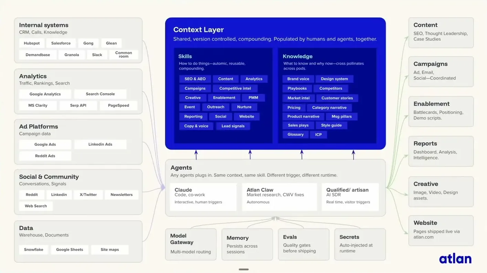

WTF Is the Context Layer? The Missing Infrastructure for Production Agents
Atlan documents two eras of internal agent buildout with roughly 300 skills, 40 agents, a shared context layer, and specific failure modes (dependency breakage, hardcoded secrets, silos).
If you only read one thing
- Only 1 in 5 AI use cases reaches production and 56% of CEOs report zero financial benefit from AI today, despite exponential intelligence gains (c1).
- Atlan's first era of bootstrapped single-purpose agents (e.g. Hermione, MoneyPenny) broke down due to context engineering overhead, agents operating in silos, and context sprawl across separate memory systems (c3, c4).
- Atlan's team built roughly 300 skills and 40 agents around a shared 'context layer' over 6 months, but hit new problems: skill dependency breakage, unclear skill-quality ownership, and hardcoded secrets in .env files (c5, c6).
This traces the marketing team's own shared context-layer build the speaker walked through on slide: source systems feed a context layer of skills and knowledge, a retrieval layer serves that to Claude Code, an internal Slack agent called Claw, and external AI SDR tools, while the same skills layer also produced dependency breakage and a governance gap in practice (ours).
Why this talk is a blueprint, not a take (ours)
Scope: Atlan's own internal multi-agent buildout, mainly demonstrated through its marketing team, covering the move from siloed single-purpose agents to a shared context layer feeding general-purpose agents; not a shipped product for other companies to install.
A two-era account of building roughly 300 skills and 40 agents around one shared context layer that ingests business systems (CRM, ad platforms, analytics, data warehouse) and organizes them into skills and knowledge, then serves multiple agent runtimes (Claude Code, an internal Slack-based agent called Claw, and external AI SDR tools) via MCP, SQL, and vector retrieval. It documents concrete failure modes at each stage rather than a finished, off-the-shelf reference architecture.
Prerequisites the talk implies:
- A general-purpose agent runtime that can plug into a shared context source rather than hardcoded context per agent
- Domain experts willing and available to author and own skills (SEO, competitive intel, campaigns, etc.)
- Integrations into the underlying business systems (CRM, ad platforms, analytics, data warehouse) the context layer needs to read from
- A retrieval layer supporting multiple access patterns (MCP, SQL, vector, hybrid) since different agents pull context differently
- Someone accountable for skill quality and security posture before scaling past a handful of skills
What the talk does not say:
- No numbers on team size, engineering headcount, or time spent building the context layer itself
- No description of how skill dependency breakage actually gets caught or resolved, only that it happens
- No detail on how skill-quality ownership was eventually assigned after being flagged as unclear
- No cost or latency figures for the retrieval layer (MCP, SQL, vector, hybrid assembly)
- No account of how the security and governance issues, like hardcoded secrets, were actually fixed, only that they occurred
If you were to replicate one thing first: Reverse-construct a first version of the context layer by connecting existing systems of record (CRM, data warehouse, ticketing) and mapping how they relate, before building any new agents on top of it.
| Component | What it does (from the talk) | Evidence | Slide |
|---|---|---|---|
| Context layer ("Company Brain") | Shared, version-controlled, compounding store populated by humans and agents together, holding skills and knowledge. | c5 · 14:29 |  |
| Skills library | About 300 skills built by domain experts (SEO, competitive intel, campaigns, outreach) over 6 months, feeding the context layer. | c5 · 14:29 | |
| Claude Code / Co-work | Human-triggered agent used for interactive coding and collaborative work on top of the context layer. | c8 · 12:56 | |
| Atlan Claw | Internally built autonomous agent that runs in Slack, doing market research and fixing site issues. | c8 · 12:56 | |
| Qualified / Artisan (AI SDR) | External products used as the real-time, visitor-triggered AI SDR layer. | c8 · 12:56 | |
| Retrieval layer | Pulls context out of the layer via MCP, SQL, vector retrieval, and hybrid assembly so different agents can consume it. | c9 · 18:35 | |
| Skill dependency chain | One skill's changes (e.g. competitive intel feeding category positioning feeding sales battle cards) silently break downstream skills as they evolve. | c6 · 14:30 | |
| Governance gap | Hardcoded secrets in .env files and people downloading public skill repos, with no clear owner of skill quality. | c6 · 14:30 |
Intelligence is scaling, usefulness isn't
- The speaker cites that only 1 in 5 AI use cases makes it to production and 56% of CEOs report zero financial benefit from AI, despite models improving dramatically (from failing the bar exam two years ago to scoring in the top 1% of test-takers today).
- She attributes the gap partly to the fact that only 10% of job performance variance is explained by IQ in the human world, arguing performance is a function of both intelligence and situated context/expertise, and that context has moved far less than intelligence has.
“1 out of 5, you know, AI use cases actually make it to production. You know, 56% of CEOs say that there's zero financial benefit from AI today”
said at 02:36“only 10% of job performance variance is explained by IQ”
said at 02:36Era one: bootstrapped single-purpose agents
- About 18 months ago, Atlan began building individual named agents for specific jobs (e.g.
- Hermione for health intelligence, MoneyPenny for financial risk).
- This broke down because context engineering (giving the agent accurate business context) took far longer than building the agent itself, agents operated in silos without shared updates (e.g. a sales agent still pitching old positioning after marketing changed it), and agents accumulated separate, inconsistent memory systems, making it hard to trace errors back to model, agent, or context.
“building an agent was really easy. Took like 5 minutes. Uh but giving it the business context that it took to actually get it to be accurate took forever”
said at 08:52“our marketing team had these agents and they started making changes to that and then our SDR agent on our website was still pitching the old version. Uh we had no idea how any of these things were even connected”
said at 09:53Era two: a shared context layer, and its new problems
- Atlan shifted to general-purpose agents pulling from one shared 'company brain' or context layer, building around 300 skills and 40 agents over the last 6 months.
- Their marketing team's version of this connected internal systems (Hubspot, Salesforce, Gong, Glean, Slack), analytics and ad platforms, and a data warehouse into a shared context layer of skills and knowledge, then served that layer to Claude Code and Co-work, an internally built Slack agent called Claw, and external tools Qualified and Artisan acting as an AI SDR.
- New problems emerged: skill dependency management (one skill's updates silently breaking downstream skills, e.g. competitive intel feeding category positioning feeding sales battle cards), unclear ownership of skill quality, and security/governance failures including hardcoded secrets in .env files and people downloading public skill repos.
“Over the last 6 months, we ended up creating about 300 skills and 40 agents in this team”
said at 14:29“every time they learn and evolve, it breaks something downstream. Uh and these skills very quickly start getting outdated and start drifting”
said at 14:30“we had Cloud Code and Co-work. We also had our own claw that we deployed, which has, you know, essentially talks in our Slack channels. And then we used some external products like Qualified and Artisan.”
said at 12:56What a 'GitHub for context' needs
- The speaker frames the next step as company context needing lifecycle management, versioning, and collaboration the way code does: skill profiles, self-learning loops, quality and security posture management, and clear approver/maintainer/contributor roles.
- She describes the target shape as a layer that continually mines context from business systems, feeds it into the company brain, harnesses it into skills, and exposes it to agents through multiple retrieval methods (MCP, SQL, vector retrieval, hybrid assembly).
- She also argues context is recoverable from existing business systems by reverse-constructing how systems like Salesforce, HubSpot, and a data warehouse connect, since context is otherwise lost at each hop between systems.
“if you're able to connect your Salesforce and your HubSpot to your data warehouse, to your application layer, and then you're able to reverse construct how these things are actually connected one to another, context today gets lost in every one of those hops”
said at 17:35“It has a bunch of ways you can retrieve it. So, MCP, SQL, vector retrieval, hybrid assembly, all these different ways that you retrieve it”
said at 18:35Commentary (ours)
(ours) The pivot from single-purpose agents to a shared context layer traded one failure mode (silo drift) for another (dependency breakage across 300 interlinked skills) rather than eliminating the underlying problem; the talk doesn't claim era two is solved, only that it surfaces a different, more code-like set of failures.

Underlying detail — every claim, typed and timestamped (9)
| Stance | Claim | t |
|---|---|---|
| asserts | Only 1 in 5 AI use cases makes it to production and 56% of CEOs report zero financial benefit from AI today. | 02:36 |
| asserts | Only 10% of job performance variance is explained by IQ, supporting the argument that context matters as much as intelligence. | 02:36 |
| warns | Building a single-purpose agent took about 5 minutes, but giving it accurate business context took far longer and often eroded stakeholder trust. | 08:52 |
| warns | Single-purpose agents operated on isolated islands with separate memory systems, so an SDR agent kept pitching outdated positioning after marketing changed it, and errors became hard to trace back to model, agent, or context. | 09:53 |
| asserts | Over the last 6 months, Atlan's team built roughly 300 skills and 40 agents around its shared context layer. | 14:29 |
| warns | Skills feeding into other skills caused downstream breakage as they evolved, and security/governance failed, including hardcoded secrets in .env files. | 14:30 |
| recommends | Connecting existing business systems (e.g. Salesforce, HubSpot, a data warehouse) and reverse-constructing how they relate can recover a first version of a company's context layer, since context is otherwise lost at each hop. | 17:35 |
| asserts | Atlan's marketing team built its shared-context experiment using Claude Code and Co-work, an internally built agent called Claw that operates in Slack, and external products Qualified and Artisan. | 12:56 |
| asserts | Agents pull context out of the context layer through multiple retrieval methods: MCP, SQL, vector retrieval, and hybrid assembly. | 18:35 |
Machine-readable copy embedded in this page (script#ontology) and in the corpus ontology.